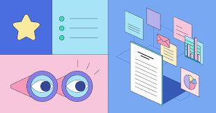

A smart daily planner
Set yourself up for success with My Day, intelligent and personalized suggestions to update your daily or weekly to-do list. With to do desktop website, it is easy to stay on task all day long.
Set yourself up for success with My Day, intelligent and personalized suggestions to update your daily or weekly to-do list. With to do desktop website, it is easy to stay on task all day long.

A truly cross-platform task management app. Whether you’re at home using the desktop app or are using the mobile app on the go, you can access your task list and stay organized.
Break tasks down into very simple steps, add due dates, and set reminders for your daily checklist to keep you on track.
This app was created to help you manage your tasks efficiently and keep track of your progress.